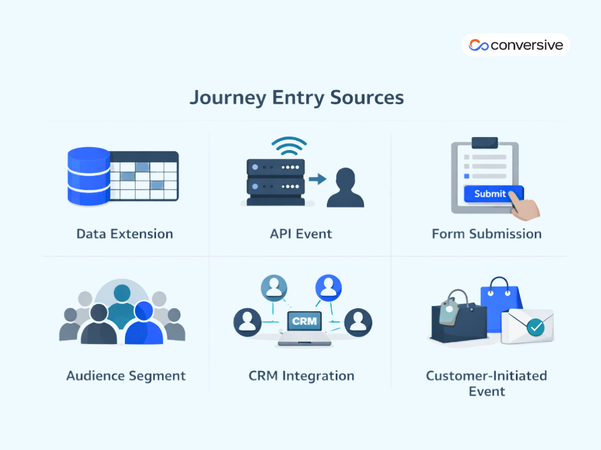

Discover our 2026 guide to journey builders and customer journey mapping. Learn how to design effective, human-centered customer journeys that drive engagement and results.
Advanced journey builders and customer journey mapping tools give businesses more data and automation than ever. Yet many customer journeys still feel impersonal, as if no one is truly listening.
The challenge isn’t the technology, it’s that organizations often confuse mapping the journey with genuinely understanding the customer experience. As we covered in our previous article, Journey Builders: Powering Conversational AI & Automation, journey builders are transforming how businesses automate and personalize customer interactions. Modern journey builder platforms are powerful, but without thoughtful design, they can amplify noise instead of creating meaningful engagement.
Current journey builder platforms can:
- orchestrate multi-channel campaigns
- split paths based on behavior
- trigger messages at precisely the right moment
And still, many customers feel like just another data point rather than a person whose needs are being understood. All the precision in the world can’t replace a journey that forgets the human at its center.
No amount of automation can substitute for thoughtful design. Automation amplifies what’s already there, but it can’t fix a flawed foundation.
Let's talk about how to think differently about journey building, not just as a technical exercise, but as a strategic discipline that actually serves your customers.
The Three Questions That Separate Good Journeys from Noise
Before you drag a single activity onto a canvas or configure an entry source, you need to interrogate your own intentions. Most journey failures happen in the planning phase, not the execution phase.
First: Is this journey serving a purpose?
This sounds obvious, but I've seen journeys that exist simply because someone thought,
“We should probably have an email sequence for this”.
A purpose isn't a vague aspiration, it's a specific outcome you can measure. If you find yourself listing multiple goals, that's a red flag. Split them into separate journeys. A journey trying to simultaneously welcome new customers, drive a purchase, and collect feedback is really three journeys wearing a trench coat.
In short, trying to mix too many objectives in one journey usually backfires, making the experience feel forced.
Second: Will customers actually benefit from this?
This is where intention meets impact.
Your journey might serve your business purposes beautifully, but if it doesn't deliver tangible value to the person experiencing it, you're just contributing to inbox noise or notification fatigue.
Value doesn't always mean discounts and offers, sometimes it's timely information. While at times, it's saving them a step, and sometimes it's just not bothering them when they don't need to hear from you.
In short, a journey isn’t successful just because it serves the business, it has to genuinely help or respect the customer’s time. Otherwise, it’s just noise.
Third: How will customers act upon this journey?
You need to visualize the actual human behavior you're expecting, but not in abstract terms like “engagement”, but specifically:
- Will they click?
- When?
- From which device?
- What happens if they don't?
This clarity determines everything from your send times to your channel selection. An SMS works great for a time-sensitive reminder. It's terrible for detailed product education.
In short, stop thinking in abstract marketing terms. Think like a real person interacting with your brand and design the journey to match their behavior and context.
These three questions form a decision tree. If any answer is unclear or negative, stop building and go back to strategy.

Your Entry Source Determines the Journey You Can Build
Entry sources aren't just technical configurations, they're strategic choices that fundamentally shape what's possible within your journey. It’s like the front door to your customer experience, which also means, the wrong door leads to the wrong room every time.
1) Data Extensions
They are the workhorses when you need precision-targeting based on specific attributes like purchase history or engagement scores.
One important thing to remember is, never use the same data extension to power multiple journeys simultaneously.
It creates chaos in your contact processing and can lead to customers receiving duplicate or conflicting messages. Create pre-filtered copies for each journey instead.
2) API Events
API events enable real-time responsiveness. A customer abandons a cart, an API event fires, and they're in a recovery journey within minutes. This is where automation starts feeling less like batch-and-blast and more like an intelligent system responding to actual human behavior.
3) Form Submission
It triggers journeys when someone completes a form on your website or landing page. This creates a seamless handoff from interest to nurture without manual intervention, the moment someone raises their hand, they're already in motion through your experience.
4) Audience Segment
It lets you target predefined groups based on behavioral patterns or demographic criteria. This works particularly well when you've already done the heavy lifting of segmentation upstream and just need to activate those audiences in your journeys.
5) CRM Data Integration
It is powerful when your customer relationship management system is the source of truth. Leveraging CRM records and events, like when a lead is created or an opportunity closes, creates contextually relevant journeys where marketing automation and customer relationship management actually become one coherent system.
6) Customer-initiated Events
Events like newsletter opt-ins or purchases have traditionally been common triggers, though the industry is evolving toward more contextual, data-rich entry points that consider the full customer context rather than isolated actions.
Matching Journey Design to Intent
Not all journeys are created equal, and trying to force the wrong journey type into service creates unnecessary complexity.
Multi-step Journeys
These are your orchestra conductors. They coordinate multiple touchpoints across email, SMS, push notifications, and social media, using behavioral logic to determine each person's unique path. Use these for nurturing, onboarding, retention, and re-engagement.
They're designed for scenarios where the relationship unfolds over time and adapts based on how the customer responds.
Let’s take the case of a new customer onboarding journey.
- Day one might be a welcome email.
- Day three could branch based on whether they've activated their account.
- Those who have got advanced tips
- Those who haven't got a gentle reminder with a help video.
- Day seven might check product usage and split again.
This kind of adaptive, responsive journey can't be built as a linear sequence.
Single Send Journeys
They are elegant in their simplicity, one message, one audience, one moment. They're perfect for flash sales or urgent announcements.
Don't overcomplicate these, their power lies in their immediacy and focus.
Transactional journeys
They occupy a special category as they are triggered by specific events, they deliver expected information following a customer action, order confirmations, shipping updates, receipts.
These aren't marketing, they're operational necessities. Nobody wants creativity in their order confirmation, they want speed and accuracy.
| Journey Type | Purpose / Role | Ideal Use Cases | Key Features | Pitfalls / Misuse | Depth / Nuance |
|---|---|---|---|---|---|
| Multi-Step Journeys | The “orchestra conductor” of customer interactions |
Onboarding Nurturing Retention Re-engagement |
Multiple touchpoints (email, SMS, push, social) Adaptive branching Behavioral logic Responsive to customer actions |
Trying to make a linear sequence do the work → complexity and missed personalization | Designed for relationships unfolding over time. Example: onboarding journey—welcome email → activation check → tips/reminder → usage check. Must adapt based on real behavior, not assumptions. |
| Single Send Journeys | Simple, focused, immediate impact |
Flash sales Urgent announcements One-off campaigns |
One message One audience One moment |
Overcomplicating the journey → dilutes clarity and impact | Power lies in focus and immediacy. Don’t force multi-step logic here; clarity beats cleverness. |
| Transactional Journeys | Operational necessity, delivers expected information |
Order confirmations Shipping updates Receipts Password resets |
Triggered by specific events Highly reliable Fast Accurate |
Treating them like marketing → unnecessary creativity or delay | Customers value speed and clarity over clever messaging. These journeys build trust, not engagement metrics. |
Foundations of Strategic Journey Design
Every multi-step journey rests on three foundational pillars. If you nail them right, everything else becomes easier. While if you get them wrong, even perfect execution won't save you.
1) Entry source is your foundation
It determines who enters and why, which shapes the entire experience that follows.
The data integrity of your entry source directly impacts the quality of insights you can extract. If garbage goes in, no amount of sophisticated flow control will produce meaningful results.
2) Activities are where strategy becomes tangible
This is your actual engagement, the emails, SMS messages, push notifications, and data updates that constitute your relationship with the customer.
But activities aren't just about sending messages. They include customer updates that change contact information in real-time and CRM activities that create tasks or cases in your sales system.
For instance, cramming seven emails into a two-week journey just because there are seven things to say isn’t a journey, that’s an assault. It’s far better to have three highly relevant touchpoints than seven mediocre ones.
The sophistication isn’t in volume, it’s in hitting the right note at the right time.
3) Flow control is your logic layer
It’s like the traffic cop determining pace and path. Wait nodes prevent you from annoying customers with too-frequent contact.
Decision splits route people based on data attributes like VIP status or purchase tier. Engagement splits react to behavior, such as: did they click, open, or ignore your last message?
This is where journey building becomes truly strategic. It’s not just about deciding what to send, it’s about knowing:
- when to wait
- when to branch
- when to exit
Sometimes that exit is simply because someone has already achieved the goal or clearly shown they’re not interested.
Paying attention to these signals is what separates smart automation from spam. Respecting the customer’s behavior and intent turns a sequence of messages into a meaningful experience.
Modern platforms even let you A/B test different strategies within a live journey, learning what works while the campaign runs. You might test whether a three-day wait performs better than a five-day wait, or whether leading with a case study converts better than leading with a discount.
| Pillar | Purpose / Role | Key Components | Best Practices | Common Pitfalls | Depth / Nuance |
|---|---|---|---|---|---|
| 1) Entry Source | Foundation of the journey; defines who enters and why |
- Contact lists - Behavioral triggers - Segmentation rules - Subscription events |
Ensure data integrity Define clear entry criteria Validate sources |
Garbage in → garbage insights Unclear entry rules → irrelevant experiences |
Entry source shapes the entire journey. A poor source makes even sophisticated flows useless. Treat it like the DNA of the journey. |
| 2) Activities | Tangible customer engagement |
- Emails - SMS - Push notifications - CRM updates - Data updates |
Prioritize relevance over volume Sequence messages thoughtfully Include real-time updates |
Too many touchpoints → overwhelm Irrelevant content → disengagement |
Quality > quantity. Three highly relevant messages are better than seven mediocre ones. Activities are where strategy becomes human-facing. |
| 3) Flow Control | Logic layer that orchestrates pace and path |
- Wait nodes - Decision splits (attributes) - Engagement splits (behavioral) - Exits |
Respect customer behavior Branch thoughtfully Exit when goals achieved Test variations (A/B testing) |
Ignoring pacing → spam Static sequences → low personalization Skipping exits → wasted touches |
Flow control is strategic intelligence. Timing, branching, and exits turn messages into meaningful experiences. Modern platforms allow live optimization. |
How Conversive Helps You Build Better Journeys
Understanding the theory behind effective journey building is one thing. Actually implementing it without fighting your tools is another.
At Conversive, we've designed our journey builder specifically to support the strategic approach outlined above, not just as a feature checklist, but as a coherent system that helps you think through the planning process before you start building.
Flexible Entry Sources That Match Your Data Reality
Our platform supports all six major entry source types, from data extensions to API events to CRM integrations. But more importantly, we've built safeguards that prevent the common mistakes, like trying to use the same data source for multiple journeys. The system alerts you before you create duplicate contact processing issues.
Journey Types That Actually Map to Use Cases
We don't just give you a blank canvas and wish you luck. Conversive provides distinct journey templates for multi-step campaigns, single sends, and transactional messages. Each template comes pre-configured with the activities and flow control options that make sense for that journey type. You can still customize everything, but you're starting from a foundation that's already thought through the strategic implications.
Visual Flow Control That Makes Logic Obvious
The drag-and-drop interface makes it easy to add wait nodes, decision splits, and engagement splits, but the real value is in how we visualize what's happening. You can see at a glance where customers are branching, where they're waiting, and where they're exiting. This visibility makes it much easier to spot logic errors before you launch.
Built-In Journey Mapping Tools
Too often, journey mapping happens in one tool and execution in another, forcing teams to rebuild everything from scratch once they move into automation. Conversive brings mapping directly into the planning workflow. You can document your current state, design your future state, and build the actual journey, all in one place. This keeps strategic thinking tightly connected to tactical execution.
Real-Time Testing and Optimization
Once your journey is live, Conversive provides A/B testing capabilities at every decision point. Want to test different wait times? Different message variations? Different exit criteria? You can do all of that without creating duplicate journeys. The platform tracks performance across each variation and helps you identify winning strategies based on actual customer behavior.
The goal isn't to give you more features, it's to give you the right features implemented in a way that supports better strategic thinking, not just faster execution.
Ready to Build Journeys That Actually Work?
If you're tired of customer journeys that feel like automation for automation's sake, it's time to rethink your approach. Schedule a demo with our team to see how Conversive can help you build journeys grounded in customer understanding.
Frequently Asked Questions
1. What is customer journey automation?
Customer journey automation is the design and delivery of personalized, multi-channel experiences based on customer behavior and data. It helps businesses scale engagement across regions while keeping interactions relevant and timely.
2. Why do automated customer journeys feel impersonal?
Most journeys feel impersonal because they’re built around tools instead of customer intent. Automation amplifies poor strategy, resulting in irrelevant messages regardless of geography or channel.
3. How do you design customer journeys that feel human?
Human journeys start with a clear purpose, real customer value, and an understanding of context. Designing around how people actually behave makes automation feel helpful, not intrusive.
4. What entry sources are best for customer journey orchestration?
Common entry sources include data extensions, API events, CRM integrations, and form submissions. The right entry source ensures customers enter journeys at the right moment with the right context.
5. What’s the difference between multi-step and single-send journeys?
Multi-step journeys adapt over time based on customer behavior and are ideal for onboarding and retention. Single-send journeys work best for urgent or time-sensitive communications.
6. How does journey flow control improve customer experience?
Flow control manages timing, branching, and exits based on behavior signals. This prevents over-messaging and respects customer intent across channels and regions.
7. What should companies look for in a customer journey automation platform?
Look for platforms that support strategic planning, flexible entry sources, visual logic, and real-time optimization. The right tools help teams build journeys around customer understanding, not just automation.